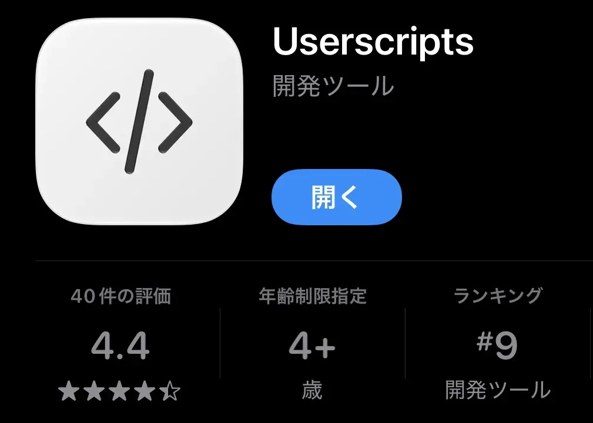
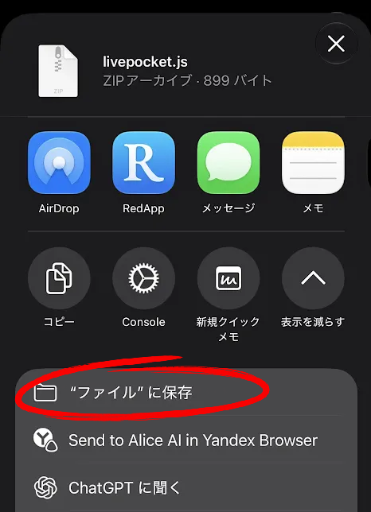
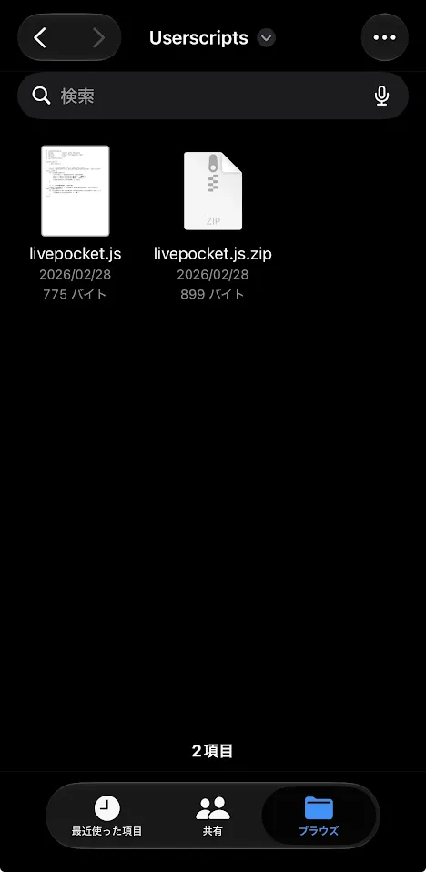
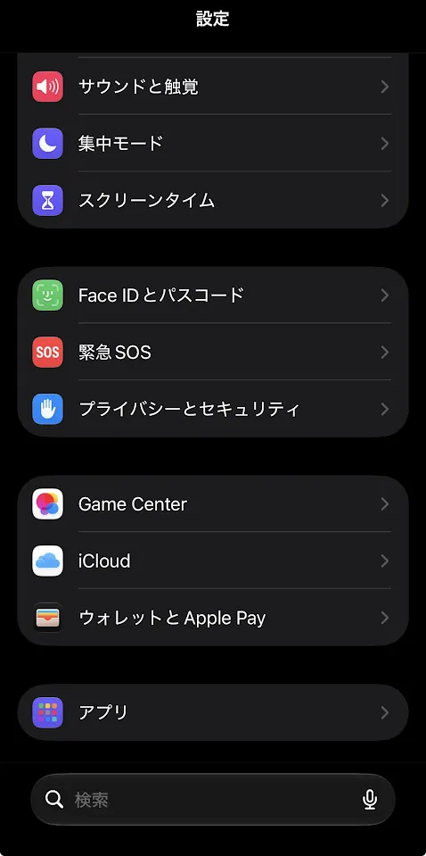
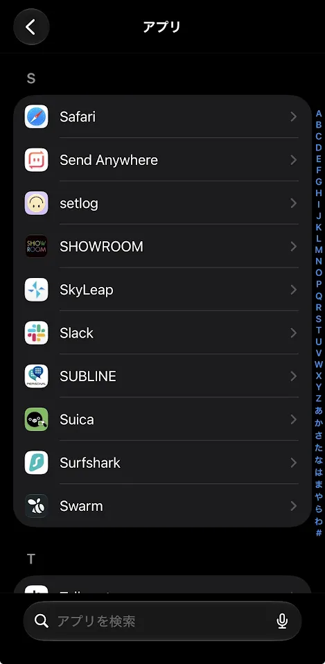
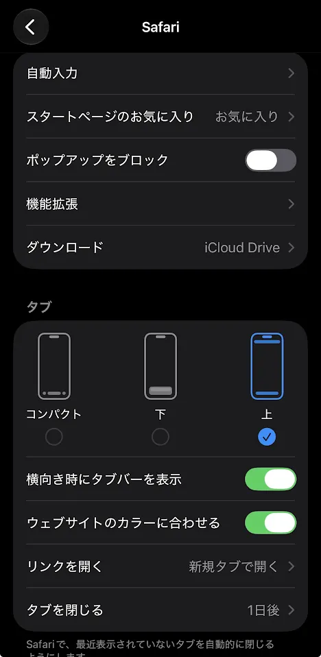
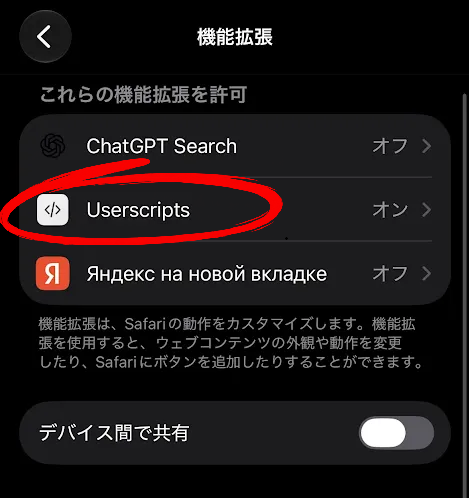
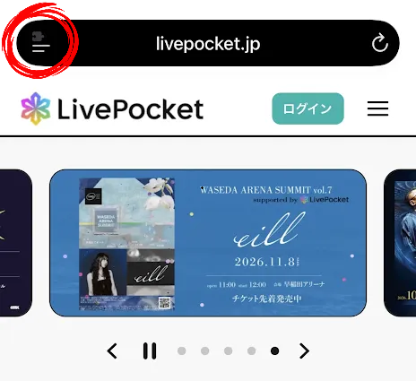
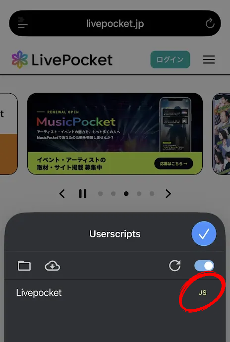

1
アプリをインストール
App StoreからUserscriptsを入手

Userscriptsをインストール
App StoreでUserscriptsを開き、アプリをインストールします。
2
スクリプトを保存・展開
ファイルアプリで操作します

ZIPを保存
「このiPhone内 ＞ Userscripts」フォルダにZIPファイルを保存します。

ZIPをタップして展開
展開されたフォルダに.jsファイルがあることを確認します。
3
Safariの機能拡張を有効にする
iPhoneの「設定」から進みます

設定 ＞ アプリ
iPhoneの「設定」を開き、「アプリ」をタップします。

Safariを選択
アプリ一覧から「Safari」を開きます。

機能拡張を開く
Safariの設定にある「機能拡張」をタップします。

Userscriptsをオン
一覧からUserscriptsを選び、スイッチをオンにします。
4
Safariで動作を確認
スクリプトを使うWebサイトで確認

Userscriptsを開く
対象サイトをSafariで開き、URLバー付近のパズルアイコンからUserscriptsを選びます。

表示を確認
保存したファイルが表示され、「JS」の文字が黄色になっていることを確認します。
ここまでで設定完了ですUserscripts — App Storeまだインストールしていない場合